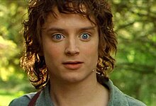
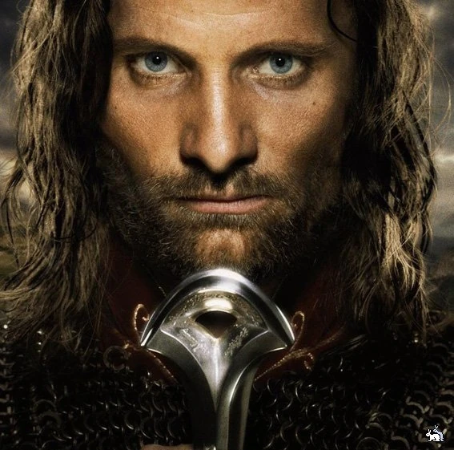
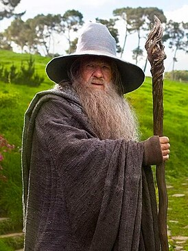

Персонажи
Познакомьтесь с легендарными героями Средиземья: Фродо, Гэндальфом, Арагорном, Леголасом и другими!
| Фото | Имя | Описание |
|---|---|---|
|  | Фродо Бэггинс | Хоббит из Шира, носитель Единого Кольца, отправившийся в опасное путешествие, чтобы уничтожить Кольцо во Вратах Рока. |
|  | Арагорн | Наследник трона Гондора, могучий воин и верный союзник Братства Кольца. |
|  | Гэндальф | Мудрый и могущественный маг, наставник Братства Кольца, играющий ключевую роль в борьбе против Саурона. |